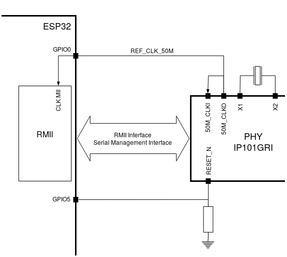

ESP32-Ethernet-Kit
概述
ESP32-Ethernet-Kit 是一款以太网转 Wi-Fi 开发板，可以让以太网设备通过 Wi-Fi 互联。同时，为了提供更灵活的供电选项，ESP32-Ethernet-Kit 还支持以太网供电（PoE）。
ESP32-Ethernet-Kit 是一款基于 ESP32-WROVER-E 的开发板。更多信息请查看数据手册 ESP32-WROVER-E Datasheet [7]。
它由两块开发板组成：以太网板 A 和 PoE 板 B。Ethernet Board (A) 包含 Bluetooth/Wi-Fi 双模 ESP32-WROVER-E 模块和单端口 10/100 快速以太网收发器（PHY）IP101GRI。PoE Board (B) 提供以太网供电功能。A 板可以独立工作，无需安装 B 板。

为了加载和监视应用程序，以太网板（A）还配有 FTDI FT2232H 芯片，这是一款先进的多接口 USB 桥接芯片。借助该芯片，可以通过 USB 接口使用 JTAG 直接调试 ESP32，而无需单独的 JTAG 调试器。
硬件
ESP32 特性
双核 Xtensa 微处理器（LX6），主频 160 或 240MHz
520KB of SRAM
802.11b/g/n/e/i
Bluetooth v4.2 BR/EDR 和 BLE
其他外设：
12 位 ADC，最多 18 个通道
2 个 8 位 DAC
10 个触摸传感器
4x SPI
2x I2S
2x I2C
3x UART
SD/SDIO/MMC 主机
从机（SDIO/SPI）
以太网 MAC
CAN 总线 2.0
IR (RX/TX)
电机 PWM
LED PWM，最多 16 个通道
霍尔效应传感器
温度传感器
加密硬件加速（RNG、ECC、RSA、SHA-2、AES）
5uA 深度睡眠电流
非对称多处理（AMP）
搭载 ESP32 和 ESP32-S3 SoC 的开发板可以运行两个不同的应用程序。得益于双核架构，每个核都可以独立运行定制任务，和/或通过 OpenAMP 框架交换数据。代码参考见 Inter-Processor Communication (IPC) 目录。
备注
** AMP 与串口输出支持 **
在当前的 Zephyr ESP32 实现中，运行在 APPCPU 上的应用程序尚不能使用由 Zephyr 管理的串口驱动（例如 printk()、日志或控制台 UART）。因此，Zephyr 提供的串口输出 API 只能在 PROCPU 上使用。
作为变通方法，运行在 APPCPU 上的应用程序可以使用 ets_printf() 等 ESP32 ROM 函数输出诊断或调试信息。
更多信息请参阅 ESP32 Datasheet [1] 或 ESP32 Technical Reference Manual [2]。
支持的功能
esp32_ethernet_kit 开发板支持下列硬件功能。
说明
The list of supported hardware features was not generated. Run a full documentation build for the required metadata to be available.
功能概述
下面的框图展示了 ESP32-Ethernet-Kit 的主要组件及其互连关系。

功能说明
下面的图表介绍了 ESP32-Ethernet-Kit 的关键组件、接口和控制元件。
Ethernet Board (A)

下表从图片右上角开始，按顺时针方向进行说明。
关键组件 |
说明 |
|---|---|
ESP32-WROVER-E |
该 ESP32 模组带有 64-Mbit PSRAM，提供灵活的扩展存储和数据处理能力。 |
GPIO Header 2 |
五个未焊接的通孔焊盘，用于引出 ESP32 的部分 GPIO。详见 GPIO Header 2。 |
功能开关 |
4 位 DIP 开关，用于配置 ESP32 部分 GPIO 的功能。详见 功能开关。 |
Tx/Rx LEDs |
两个 LED，用于显示 UART 传输状态。 |
FT2232H |
FT2232H 芯片用作多协议 USB 转串口桥接器，可通过 USB 编程和控制，以便与 ESP32 通信。FT2232H 还提供 USB 转 JTAG 接口，位于芯片的通道 A，而 USB 转串口位于通道 B。FT2232H 芯片让应用程序的开发和调试更加方便。参见 ESP32-Ethernet-Kit V1.2 Ethernet Board (A) Schematic [6] |
USB 端口 |
USB 接口。既为开发板供电，也是计算机与开发板之间的通信接口。 |
电源开关 |
电源开关。将开关拨到 5V0 位置为开发板上电，拨到 GND 位置则断电。 |
5V 输入 |
当开发板独立运行（未连接计算机）时，使用 5 V 电源接口会更加方便。 |
5V 电源指示 LED |
当开发板通过 USB 或 5 V 输入供电时，该红色 LED 点亮。 |
DC/DC 转换器 |
提供直流 5 V 到 3.3 V 的转换，输出电流最高 2 A。 |
B 板连接器 |
一对公母排针，用于安装 PoE Board (B) |
IP101GRI (PHY) |
与以太网线缆的物理层（PHY）连接由 IP101GRI 芯片实现。PHY 与 ESP32 之间通过精简媒体独立接口（RMII）连接，RMII 是媒体独立接口 (MII) 标准的一种变体。该 PHY 支持 10/100 Mbps 的 IEEE 802.3/802.3u 标准。 |
RJ45 端口 |
以太网数据传输端口。 |
网络变压器模块 |
网络变压器是以太网规范的一部分，用于防护故障和瞬态干扰，包括抑制收发器 IC 与线缆之间的共模信号。网络变压器还在收发器与以太网设备之间提供电气隔离。 |
Link/Activity LEDs |
两个 LED（绿色和红色），分别指示 PHY 的 "Link" 和 "Activity" 状态。 |
BOOT 按键 |
下载按键。按住 BOOT 再按下 EN，即可进入固件下载模式，通过串口下载固件。 |
EN 按键 |
复位按键。 |
GPIO Header 1 |
该排针提供六个未焊接的通孔焊盘，连接到 ESP32 的空闲 GPIO。详见 GPIO Header 1。 |
PoE Board (B)
该板将通过以太网线缆传输的电能（PoE）转换为以太网板（A）的电源。PoE 板（B）的主要组件见 Functionality Overview 下的框图。
PoE 板（B）具有以下特性：
支持 IEEE 802.3at
电源输出：5 V，1.4 A
要使用 PoE 功能，应通过以太网线缆将以太网板（A）的 RJ45 Port 连接到支持 PoE 的交换机。当以太网板（A）检测到 PoE 板（B）的 5 V 电源输出时，会自动切断 USB 供电。

关键组件 |
说明 |
|---|---|
A 板连接器 |
四个母排针（左）和四个公排针（右），用于将 PoE 板（B）连接到 Ethernet Board (A)。左侧引脚接收来自 PoE 交换机的电源，右侧引脚为以太网板（A）提供 5 V 电源。 |
外部电源端子 |
PoE 板（B）的可选电源（26.6 ~ 54 V）。 |
设置选项
本节介绍 ESP32-Ethernet-Kit 硬件的配置选项。
功能开关
该 DIP 开关处于 On 位置时，会将所列 GPIO 连接到 FT2232H 以提供 JTAG 功能；处于 Off 位置时，这些 GPIO 可用于其他用途。
DIP SW |
GPIO Pin |
|---|---|
1 |
GPIO13 |
2 |
GPIO12 |
3 |
GPIO15 |
4 |
GPIO14 |
RMII 时钟选择
RMII 工作模式下的以太网 MAC 和 PHY 需要一个公共的 50 MHz 参考时钟（即 RMII 时钟），该时钟可以由外部提供，也可以由 ESP32 内部 APLL 生成（不推荐）。
备注
有关 RMII 时钟选择的更多信息，请参阅 ESP32-Ethernet-Kit V1.2 Ethernet Board (A) Schematic [6] 第 2 页 D2 位置。
RMII Clock Sourced Externally by PHY
默认情况下，ESP32-Ethernet-Kit 配置为由 IP101GRI PHY 的 50M_CLKO 输出提供 RMII 时钟。该时钟信号由连接到 PHY 的 25 MHz 晶体倍频产生。详见下图。

请注意，上电时 PHY 通过一个电阻将 RESET_N 信号拉低而处于复位状态。ESP32 应通过 GPIO5 将 RESET_N 置为高电平以使能 PHY，只有这样才能确保系统正常上电。否则 ESP32 可能会进入下载模式（当 GPIO0 上电采样阶段 REF_CLK_50M 时钟信号处于高电平时）。
由 ESP32 内部 APLL 提供 RMII 时钟
另一种选择是由 ESP32 内部 APLL 提供 RMII 时钟，见下图。来自 GPIO0 的时钟信号先经过反相以补偿传输线延迟，然后再提供给 PHY。

要实现该选项，用户需要拆除或添加板上的一些 RC 元件。详情请参阅 ESP32-Ethernet-Kit V1.2 Ethernet Board (A) Schematic [6] 第 2 页 D2 位置。请注意，如果 APLL 已用于其他用途（例如 I2S 外设），则只能使用外部 RMII 时钟。
GPIO 分配
本节介绍 ESP32 GPIO 在 ESP32-Ethernet-Kit 上分配给哪些特定接口或功能。
IP101GRI（PHY）接口
下表列出了 ESP32（MAC）引脚到 IP101GRI（PHY）的分配。ESP32-Ethernet-Kit 默认采用精简媒体独立接口（RMII）。
No. |
ESP32 Pin (MAC) |
IP101GRI (PHY) |
|---|---|---|
RMII Interface |
||
1 |
GPIO21 |
TX_EN |
2 |
GPIO19 |
TXD[0] |
3 |
GPIO22 |
TXD[1] |
4 |
GPIO25 |
RXD[0] |
5 |
GPIO26 |
RXD[1] |
6 |
GPIO27 |
CRS_DV |
7 |
GPIO0 |
REF_CLK |
Serial Management Interface |
||
8 |
GPIO23 |
MDC |
9 |
GPIO18 |
MDIO |
PHY Reset |
||
10 |
GPIO5 |
Reset_N |
备注
ESP32 RMII 接口 下所有引脚的分配都是固定的，无法通过 IO MUX 或 GPIO 矩阵更改。REF_CLK 只能从 GPIO0、GPIO16 或 GPIO17 中选择，且无法通过 GPIO 矩阵更改。
GPIO Header 1
该排针引出了 ESP32-Ethernet-Kit 上其他地方未使用的一些 GPIO。
No. |
ESP32 Pin |
|---|---|
1 |
GPIO32 |
2 |
GPIO33 |
3 |
GPIO34 |
4 |
GPIO35 |
5 |
GPIO36 |
6 |
GPIO39 |
GPIO Header 2
该排针包含的 GPIO 可能根据 "Comments" 列中描述的场景用于其他用途。
No. |
ESP32 Pin |
备注 |
|---|---|---|
1 |
GPIO17 |
见注释 1 |
2 |
GPIO16 |
见注释 1 |
3 |
GPIO4 |
|
4 |
GPIO2 |
|
5 |
GPIO13 |
见注释 2 |
6 |
GPIO12 |
见注释 2 |
7 |
GPIO15 |
见注释 2 |
8 |
GPIO14 |
见注释 2 |
9 |
GND |
地 |
10 |
3V3 |
3.3 V 电源 |
备注
ESP32 的 GPIO16 和 GPIO17 引脚未引出到 ESP32-WROVER-E 模块，因此无法使用。如需使用这些引脚，请焊接内部不带 PSRAM 存储器的模块，例如 ESP32-WROOM-32D 或 ESP32-SOLO-1。
功能取决于 功能开关 的设置。
GPIO 分配汇总
ESP32-WROVER-E |
IP101GRI |
UART |
JTAG |
GPIO |
备注 |
|---|---|---|---|---|---|
S_VP |
IO36 |
||||
S_VN |
IO39 |
||||
IO34 |
IO34 |
||||
IO35 |
IO35 |
||||
IO32 |
IO32 |
||||
IO33 |
IO33 |
||||
IO25 |
RXD[0] |
||||
IO26 |
RXD[1] |
||||
IO27 |
CRS_DV |
||||
IO14 |
TMS |
IO14 |
|||
IO12 |
TDI |
IO12 |
|||
IO13 |
TCK |
IO13 |
|||
IO15 |
TDO |
IO15 |
|||
IO2 |
IO2 |
||||
IO0 |
REF_CLK |
见注释 1 |
|||
IO4 |
IO4 |
||||
IO16 |
IO16 (NC) |
见注释 2 |
|||
IO17 |
IO17 (NC) |
见注释 2 |
|||
IO5 |
Reset_N |
见注释 1 |
|||
IO18 |
MDIO |
||||
IO19 |
TXD[0] |
||||
IO21 |
TX_EN |
||||
RXD0 |
RXD |
||||
TXD0 |
TXD |
||||
IO22 |
TXD[1] |
||||
IO23 |
MDC |
备注
为防止 GPIO0 的上电状态受到 PHY 侧时钟输出的影响，PHY 的 RESET_N 信号默认为低电平，从而关闭时钟输出。上电后可以通过 GPIO5 控制 RESET_N 来打开时钟输出。另请参见 RMII Clock Sourced Externally by PHY。对于无法通过 RESET_N 关闭时钟输出的 PHY，建议使用可从外部禁用/使能的晶振模块。与使用 RESET_N 时类似，振荡器模块应默认禁用，并在上电后由 ESP32 打开。参考设计请参阅 ESP32-Ethernet-Kit V1.2 Ethernet Board (A) Schematic [6]。
ESP32 的 GPIO16 和 GPIO17 引脚未引出到 ESP32-WROVER-E 模块，因此无法使用。如需使用这些引脚，请焊接内部不带 PSRAM 存储器的模块，例如 ESP32-WROOM-32D 或 ESP32-SOLO-1。
开发板初始化
在开发板初始化期间（board_init.c），RESET_N（GPIO5）会被自动置为高电平以使能以太网 PHY
系统需求
二进制 blob
Espressif HAL 需要 RF 二进制 blob 才能正常工作。运行以下命令获取这些文件。
west blobs fetch hal_espressif
备注
建议在执行 west update 之后运行上述命令。
编程与调试
说明
The list of supported runners was not generated. Run a full documentation build for the required metadata to be available.
简单引导
开发板可以直接加载单个二进制镜像，无需二级引导加载程序。在不做额外配置的情况下构建应用程序时，这是默认选项。
备注
简单引导不提供任何安全功能，也不支持 OTA 更新。
MCUboot 引导加载程序
用户也可以改用 MCUboot 引导加载程序。这种情况下，必须至少构建（并烧录）一次引导加载程序。
构建应用程序时有两种方式可选：
Sysbuild
手动构建
备注
用户可以在开发板默认配置文件中添加以下一行来选用 MCUboot 引导加载程序。
CONFIG_BOOTLOADER_MCUBOOT=y
Sysbuild
借助 sysbuild，可以构建并烧录在搭载 ESP32 SoC 的开发板上完成引导所需的全部镜像。
要使用 sysbuild 构建示例应用程序，请使用以下命令：
west build -b <board> --sysbuild samples/hello_world
默认情况下，ESP32 sysbuild 会生成引导加载程序（MCUboot）镜像和应用程序镜像，但也可以配置为生成其他类型的镜像。
sysbuild 创建的构建目录结构与传统 Zephyr 构建不同。输出按域（domain）子目录组织：
build/
├── hello_world
│ └── zephyr
│ ├── zephyr.elf
│ └── zephyr.bin
├── mcuboot
│ └── zephyr
│ ├── zephyr.elf
│ └── zephyr.bin
└── domains.yaml
备注
使用 --sysbuild 选项时，每次进行全新（pristine）构建都会重新构建并重新烧录引导加载程序。
有关系统构建的更多信息，请阅读 Sysbuild（系统构建） 文档。
手动构建
在开发过程中，通常希望尽可能快地完成构建和烧录。为此，可以使用传统构建方式逐个构建镜像。
以下说明同时适用于手动构建和 sysbuild，唯一的区别在于构建目录的结构。
备注
请记住，引导加载程序（MCUboot）至少需要烧录一次。
按常规方式构建并烧录应用程序（详见 构建应用程序 和 运行应用程序）。
# From the root of the zephyr repository
west build -b <board> samples/hello_world
常规的 flash 目标可直接用于该开发板配置。以下以 Hello World 应用程序为例。
# From the root of the zephyr repository
west build -b <board> samples/hello_world
west flash
备注
在提供内置 USB Serial/JTAG 控制器的目标上，执行 west flash 后芯片可能停留在下载模式，在重新上电之前不会启动新镜像。如果出现这种情况，请使用看门狗复位进行烧录，使芯片自行重启：
west flash --reset-type watchdog-reset
更快的烧录
为了加快开发周期，--esp-skip-flashed 会在 Flash 中已有的二进制文件与待烧录的文件一致时跳过写入，一致性通过在设备上进行 MD5 校验来确认：
west flash --esp-skip-flashed
如需更快地重新烧录，--esp-diff 只写入与上次烧录的镜像不同的区域。它与本地缓存的副本进行比较，而不是读取设备，因此仅当自上次 west flash 以来 Flash 未被其他工具、开发板或手动写入修改过时才可使用：
west flash --esp-diff
可以关闭进度输出以使日志更简洁，这在 CI 中很有用：
west flash --esp-no-progress
使用以下命令打开串口监视器：
west espressif monitor
开发板自动复位并启动后，监视器中应显示以下信息：
***** Booting Zephyr OS vx.x.x-xxx-gxxxxxxxxxxxx *****
Hello World! <board>
使用代码片段（snippet）的开发板变体
ESP32 开发板可以搭配不同的模组，组合出多种 SPI Flash 容量、PSRAM 容量和 PSRAM 模式。snippets/espressif 下的代码片段提供了一种模块化方式，可在构建时应用这些变体，而无需重复编写开发板定义。
支持以下基于代码片段的变体：
代码片段名称 |
说明 |
|---|---|
Flash memory size |
|
|
配备 4MB Flash 的开发板 |
|
配备 8MB Flash 的开发板 |
|
配备 16MB Flash 的开发板 |
|
配备 32MB Flash 的开发板 |
|
配备 64MB Flash 的开发板 |
|
配备 128MB Flash 的开发板 |
PSRAM memory size |
|
|
配备 2MB PSRAM 的开发板 |
|
配备 4MB PSRAM 的开发板 |
|
配备 8MB PSRAM 的开发板 |
PSRAM utilization |
|
|
将 Flash 内容重定位到 PSRAM |
|
将 Wi-Fi 缓冲区放在 PSRAM 中 |
要应用某个开发板变体，请在 west build 中使用 -S 参数：
west build -b <board> -S espressif-flash-32M -S espressif-psram-4M samples/hello_world
备注
这些代码片段仅适用于硬件支持所选 Flash/PSRAM 配置的开发板。
如果未使用 FLASH 代码片段，则使用开发板默认的 Flash 容量。
如果未使用 PSRAM 代码片段，则使用开发板默认的 PSRAM 容量。
调试
OpenOCD 调试
Espressif 芯片需要使用带有 ESP32 专用补丁的定制版 OpenOCD。请从 OpenOCD for ESP32 [3] 下载最新版本。
详细的 JTAG 设置说明请参阅 JTAG debugging for ESP32 [5]。
Zephyr 线程感知
OpenOCD 支持 Zephyr RTOS 线程感知，使 GDB 能够：
使用
info threads列出所有线程显示线程名称、优先级和状态
在不同线程上下文之间切换
显示任意线程的回溯（backtrace）
Requirements:
构建时启用
CONFIG_DEBUG_THREAD_INFO=y
Example:
# From the root of the zephyr repository
west build -b <board> samples/hello_world -- -DCONFIG_DEBUG_THREAD_INFO=y -DOPENOCD=<path/to/bin/openocd> -DOPENOCD_DEFAULT_PATH=<path/to/openocd/share/openocd/scripts>
west debug
使用自定义 OpenOCD
Zephyr SDK 自带 OpenOCD，但可能不支持 ESP32。要使用 Espressif OpenOCD，请在构建时指定其路径：
# From the root of the zephyr repository
west build -b <board> samples/hello_world -- -DOPENOCD=/path/to/openocd -DOPENOCD_DEFAULT_PATH=/path/to/openocd/scripts
west debug